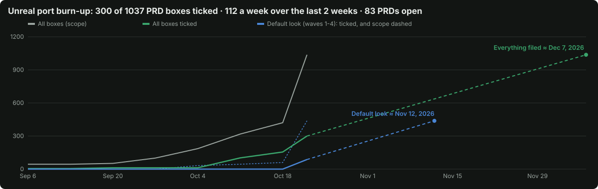

The Unreal systems that decide how a frame looks or what it costs, measured in lines of code from the 5.8.3 source, with the ThreeNative status on 2026-10-21 (including PR #541) and the order to port them.

Rank = (visual impact + performance impact) ÷ complexity, highest first. A tie goes to the lower complexity, then the earlier wave. The list keeps its waves, because a wave is a dependency order and a PRD must not rank above the one it waits on; the sort buttons show the plain rank.
Visual is measured as the share of parity locks still broken in the PRD's layer (calibration lock board): under 5% scores 0, then 15%, 30%, 45% and 60% step it up. Performance is measured as GPU ms at 1080p on the RTX 2080: under 0.1 ms scores 0, then 0.5, 1, 2 and 4 ms step it up. Everything else is an estimate with its reason in the tooltip.
| Rank | PRD | Layer | Visual impact | Performance impact | Complexity | Wave | Boxes |
|---|
| Feature | Area | LOC | Complexity | Port cost | ThreeNative |
|---|
LOC counts raw lines (code, comments, blank lines) in Engine/Source/Runtime/Renderer/Private and Engine/Shaders/Private, grouped by subfolder or file prefix. Shared files such as SceneRendering.cpp are not split, so each row is a lower bound. A subsystem shown as "shared" lives inside one file with its siblings. Landscape and World Partition hold editor code in their runtime modules. Niagara counts runtime only (editor: 275K more). Complexity, impact and port cost are judgements. Report: docs/PRDs/Unreal/research/unreal-visuals-and-performance-feature-map.md.